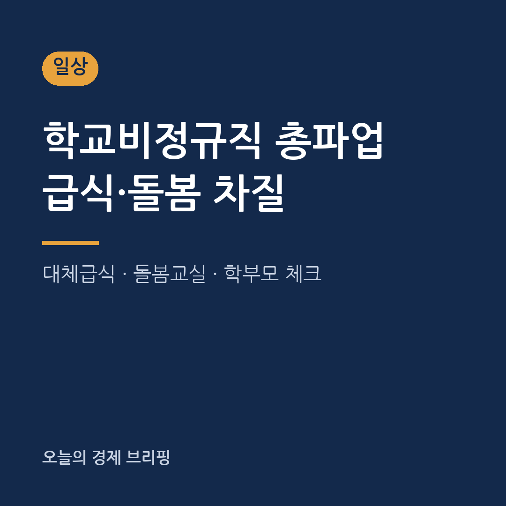
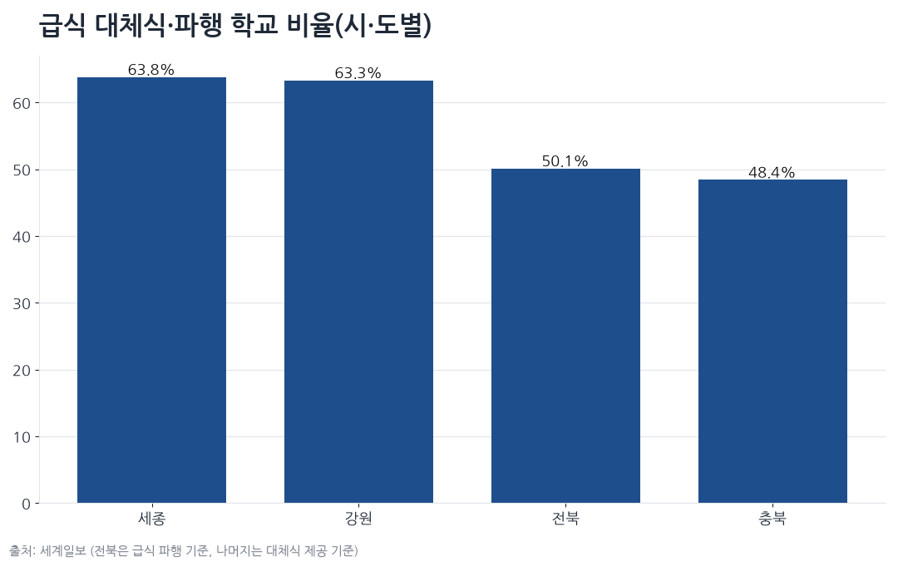

2026-11-27-1749-tistory 발행 키트 · 이 페이지는 검색에 노출되지 않습니다.
제목
카테고리
일상태그
본문 (그림·표 포함)
휴대폰 블로그 앱에서는 그림이 같이 붙지 않을 수 있어요. 그때는 [글자만 복사] 후 아래 이미지를 저장해 [그래프1]·[표1] 자리에 첨부하세요.

핵심 결론부터 정리합니다. 전국학교비정규직연대회의가 임금 교섭 결렬을 이유로 27일 총파업에 들어가면서 일부 지역에서 학교 급식이 빵·주먹밥 등 대체식으로 바뀌었고, 돌봄교실 일부도 운영이 중단되었습니다. 지역과 학교별로 대응이 달라 해당 학교의 공지 확인이 가장 중요합니다.
▶ 배경: 무엇을 두고 교섭이 갈렸나
전국학교비정규직연대회의는 교육부 및 16개 시·도교육청과 임금 교섭을 벌였으나 타결에 실패했습니다. 이에 따라 총파업이 시작되었습니다.
보도에 따르면 노조가 내건 요구는 크게 세 가지입니다. 기본급 10만 5천 원 인상, 정기 상여금 연 100만 원 인상, 그리고 직무 보조비와 상시 직종 직무 수당의 신설입니다. 이 글에서는 교섭 내용의 옳고 그름을 평가하지 않고, 생활에 미치는 영향만 다룹니다.
▶ 핵심 내용 1: 시·도별 급식 현황
보도된 지역별 수치는 다음과 같습니다. 세종은 152개교 중 97곳(63.8%), 강원은 670개교 중 424곳(63.3%)이 대체식을 제공했습니다. 충북은 508개교 중 246곳(48.4%)이 대체식을 냈고, 전북은 783개교 중 392곳(50.1%)에서 급식 파행이 발생했습니다.

주의할 점이 있습니다. 전북은 대체식이 아닌 급식 파행 기준이고 지역마다 집계 방식이 달라서, 지역 간 순위를 매기는 용도로는 적합하지 않습니다. 강원에서는 30곳(4.5%)이 학생을 일찍 귀가시킨 것으로 전해졌습니다.
▶ 핵심 내용 2: 돌봄교실 운영 현황
돌봄 분야는 급식보다 영향 범위가 작았습니다. 경기는 1,336개교 중 33곳(2.5%)이 돌봄교실을 닫았고, 세종은 55개교 중 10곳이 운영을 중단했습니다. 비율이 낮더라도 해당 학교 이용 가구에는 하루 일과 전체가 달라지는 문제입니다.
▶ 영향: 가정에서 달라지는 것
첫째, 점심 문제입니다. 대체식이 나오는 학교도 있지만 도시락 지참을 안내한 곳도 있어, 학교 안내에 따라 준비가 달라집니다.
둘째, 돌봄과 하교 시간입니다. 맞벌이·한부모 가정은 돌봄 중단이나 조기 하교에 대비한 대체 보호자를 정해 두어야 합니다.
셋째, 날씨입니다. 이번 주말 기온이 크게 내려갈 전망이어서, 도시락을 싼다면 보온·보냉 용기를 쓰는 편이 좋습니다.
▶ 확인할 점
항목별 확인 경로를 아래 표로 정리했습니다.
항목별 확인 경로
| 항목 | 확인 내용 | 확인처 |
|---|---|---|
| 급식 | 대체식 제공 또는 도시락 지참 | 학교 알림장·문자 |
| 돌봄교실 | 운영 여부, 대체 돌봄 안내 | 학교 행정실·담임 교사 |
| 하교 | 조기 하교 여부 | 학교 공지 |
| 급식비 | 미급식일 정산 방식 | 학교 행정실 |
출처: 세계일보 보도를 바탕으로 정리
파업이 얼마나 이어질지는 이번 자료만으로는 알 수 없습니다. 교섭 진행 상황에 따라 학교 대응도 바뀔 수 있으므로 매일 공지를 확인하시기 바랍니다.
▶ 정리
1. 27일 학교비정규직 총파업으로 일부 지역 급식이 대체식으로 바뀌고 돌봄교실 일부가 중단되었습니다.
2. 시·도와 학교마다 대응이 다르므로 급식·돌봄·하교 시간을 학교 공지로 확인해야 합니다.
3. 급식비 정산 방식은 학교 행정실에 문의하는 것이 정확합니다.
출처 (본문 맨 아래에 붙여넣기 권장)
- 세계일보, 학비노조 총파업에 급식·돌봄 파행… 점심은 빵, 고교선 ‘야자’ 중단, https://www.segye.com/newsView/20261127512316 - 연합뉴스, 주말 매서운 추위 닥친다…이틀 연속 기온 급강하, https://www.yna.co.kr/view/AKR20261127146500530